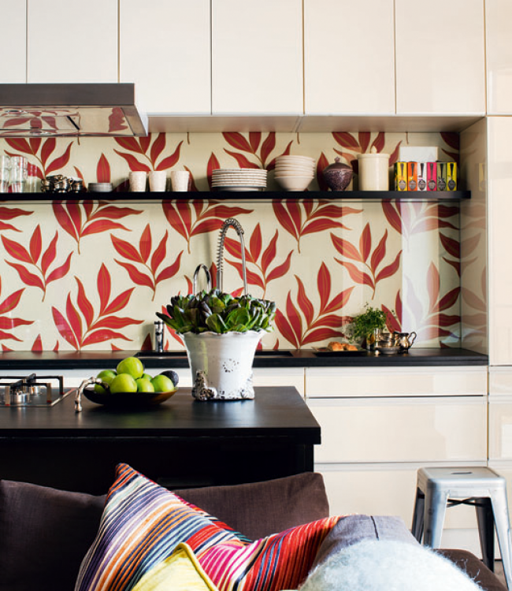

Portfolio
Kristina Lifors Interior Design is a small boutique interior design firm specializing in turn key interior design installations ranging from full renovation to final decoration. Let us inspire you by showing you some of our latest projects.
 Nybrogatan
Nybrogatan Kungsholmen 1930s Apartment1930s apartment by Norr Mälarstrand
Kungsholmen 1930s Apartment1930s apartment by Norr Mälarstrand TegnerlundenTurn-of-the-century apartment
TegnerlundenTurn-of-the-century apartment ViggbyholmRebuilt family home north of Stockholm
ViggbyholmRebuilt family home north of Stockholm Grev TuregatanA darker palette in central Stockholm
Grev TuregatanA darker palette in central Stockholm
Vasastan Apartment Mallorca TownhouseAn 1895 townhouse in northern Mallorca
Mallorca TownhouseAn 1895 townhouse in northern Mallorca Östermalm Ten-Room ApartmentA grand ten-room apartment
Östermalm Ten-Room ApartmentA grand ten-room apartment Kungsholmen One-BedroomA small one-bedroom, cleverly planned
Kungsholmen One-BedroomA small one-bedroom, cleverly planned Vasastan Two-BedroomA two-bedroom for a busy professional
Vasastan Two-BedroomA two-bedroom for a busy professional KammakargatanA young couple's first Stockholm apartment
KammakargatanA young couple's first Stockholm apartment Östermalm Pied-à-terreA turn-key pied-à-terre
Östermalm Pied-à-terreA turn-key pied-à-terre Vasastan Dressing Room
Vasastan Dressing Room